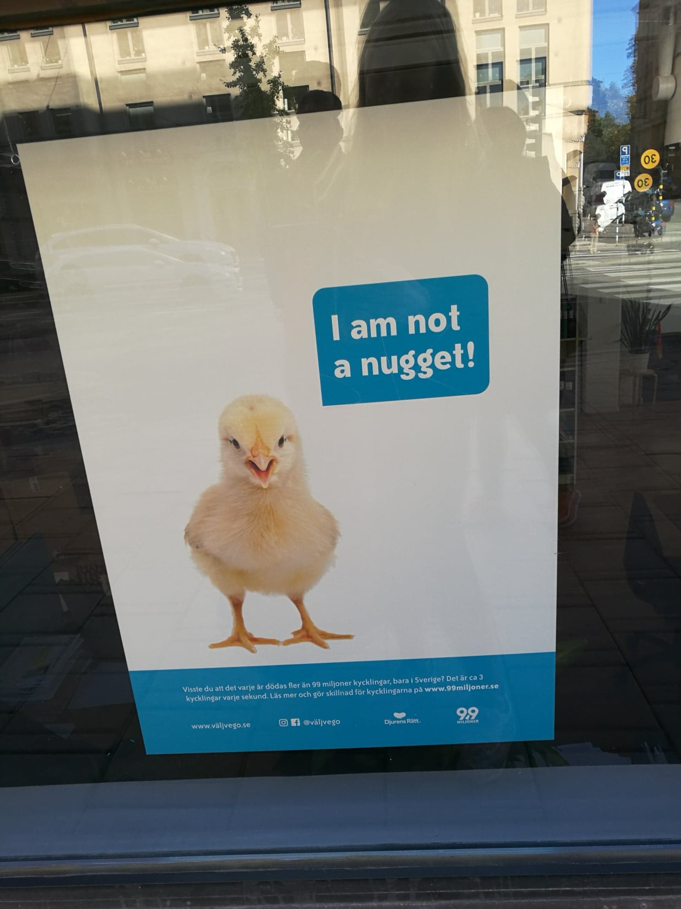

Sedan hösten 2016 läser jag ekononomi och IT-programmet vid SU och det har varit ett ögonöppnande program för möjligheterna
inom bägge fälten. Men IT-delen har varit mest intressant (särskilt informationssäkerhet och programmering), och därför skriver
jag under våren 2019 min kandidatuppsats på DSV.
Jobb
Sedan augusti 2018 arbetar jag deltid på Telias ekonomiavdelning som en del av en studentpool. Det känns fantastiskt kul att för första
gången ha ett någorlunda kvalificerat jobb, även om arbetsuppgifterna i sig inte kräver några djupare ekonomikunskaper. Jag trivs med att
kunna sitta och stå framför en dator hela dagen och inte behöva ha någon kundkontakt överhuvudtaget.
Djurrätt

"I am not
a nugget!"
Som livslång vegetarian och vegan sedan 10 år tillbaka har djurrätt på sätt och vis alltid varit en del av mitt liv. Men det är
först de senaste åren som jag börjat engagera mig mer utöver kosten och numera sitter i styrelsen för Stockholmsavdelningen av Djurens Rätt.
Vi anordnar återkommmande medlemsmöten och flygbladsbladsutdelningar och försöker bjuda in intressanta föreläsare så ofta som möjligt.